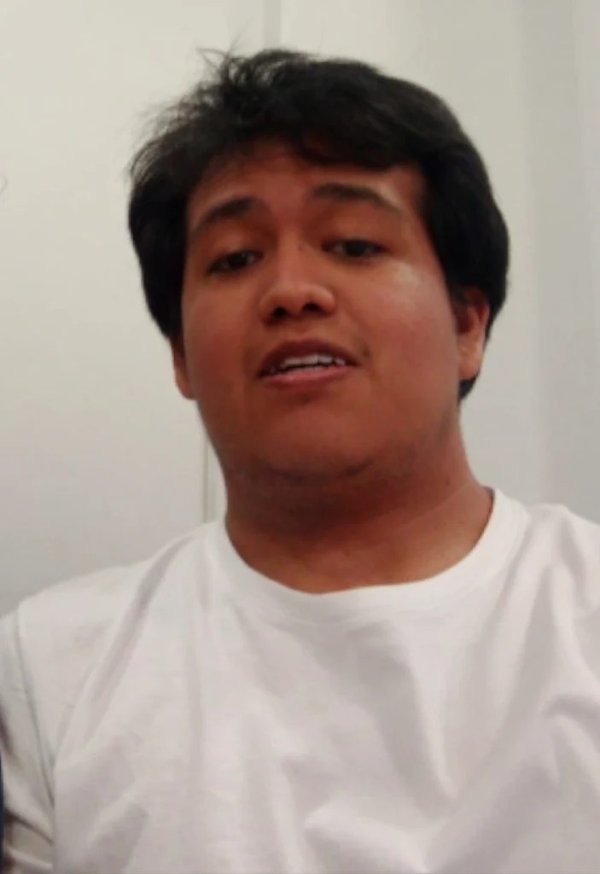

APROBADO POR EL
COMITÉ CENTRAL
COMITÉ CENTRAL

Presidente
Sebastián Adriano Del Valle Delgado
- Situación
- Abandonó la carrera (en protesta)
- Cursos jalados
- 0 este semestre (no está matriculado)
- Especialidad
- Liderazgo desde el exilio
¿Por qué abandonó la carrera?En plena entrega final, el Fortinet le bloqueó la página donde estaba la solución del laboratorio. Esa noche juró solemnemente no volver a matricularse hasta que el Fortinet caiga. Ha cumplido su palabra. Por eso es nuestro presidente: es el único candidato sin conflicto de intereses con ningún docente.
Dejé la carrera para que ustedes no tengan que dejarla.